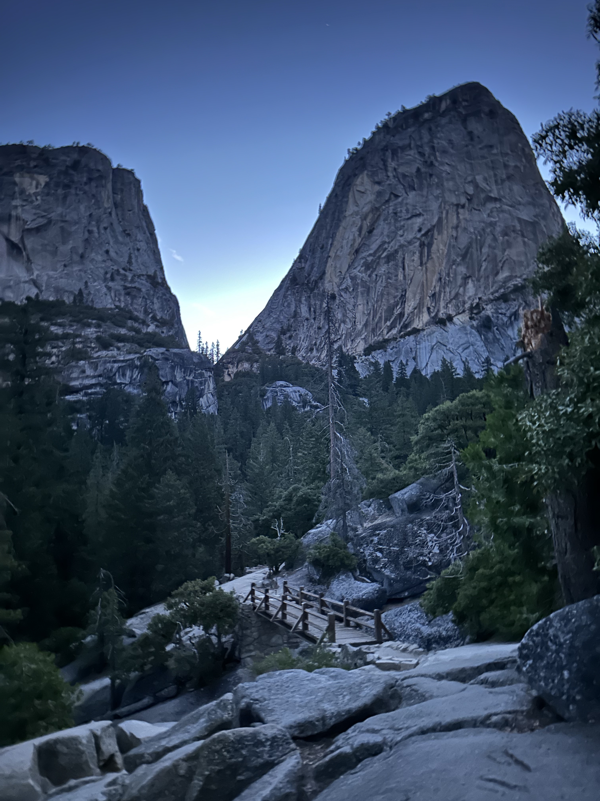

Half Dome: Lottery winnings
Preparation
Woke up at 2:15 AM, left the hostel around 3 AM and got to the trailhead (after getting mildly lost around Curry Village) at 4:25 AM. Took some pictures and set off at 4:30 AM.
Supplies for the day were a 4 L jug of water, my 500 mL running water bottle and a 500 mL can of coffee for fluids. Food was two Clif bars, two pieces of jerky, half a box of Ritz crackers, and a banana.
Mist Trail
 Started at the trail to the John Muir Trail and Mist Trail which is a mild 2k ascent. Passed by another party going to Half Dome but was trying to get to the summit pretty quick so I passed them. Took some sips of water and refilled at the last bathroom. Got to the fork and went with the Mist Trail. Views of the rapids and waterfalls were spectacular.
The first bit really was misty and everything got pretty wet. Surprisingly it wasn't very slippery though. The trail switched from random rocks, to carved stairs, and then something in the continuum between the two. Reached the bridge where you get to stand over the rapids. Very nice. Then continued up a path by the Nevada Falls. Decided to take my first Clif bar here and chill a bit.
Little Yosemite Valley
At the top, there was another fork in the road where I went to Little Yosemite Valley. After a nice flat dirt section (with a great view of Half Dome), the trail turns into forest. The forest was filled with massive trees and the trail started getting more crowded. I didn’t think I was going very fast but people were letting me through so I guess I was tailgating them pretty hard. Broke my big water out for a refill when the trail got hilly again. Ate some jerky and pulled out my Ritz crackers and started munching as I went to keep my electrolytes up.
Sub Dome
Once I got to the Sub Dome entrance, there was a park ranger checking for permits and ID. I showed her a picture of my passport which was just enough to get through. The path to the chains from there was already very steep and a lady in front of me was lost. I had to check AllTrails for the path to get us back to some very obvious stairs. Once the chains were in sight, it wasn’t very busy yet with about five people on them. Another lady was at the base looking quizzical so I asked if I could go first and off I went.
Half Dome
The cables start off not that steep. I went pretty fast for the first bit. My hands were aching by the middle and my calves started cramping. There’s some sections where you need to navigate rock either protruding or recessing from the slab. The recessed sections were nice since they acted as good foot holds. The protruding sections were harder since you needed to take bigger steps. My right quad then also started cramping when I moved my leg in a certain way. About three quarters of the way up, the path starts flattening out.
While the climb up was strenuous, I don’t think it was all that dangerous. You always have the cable to hold on to and can always maintain three points of contact and rest at any time.
I chose to go on this trip on a whim. The first time I told someone about it, they asked me how I was preparing which caught me off guard. I had chose it because the mountain looked really cool and I thought I had a good chance with the permit system being there on weekdays. I decided not to do too much research but did hear about the cables. I was afraid of psyching myself out so avoided learning more so I could make a decision for myself.
The views from the Half Dome was spectacular with a 360-degree vantage point of everything around the area. I don’t think I could fully appreciate it though since I didn’t know too much about Yosemite and the greater Sierras but as views alone it’s hard to miss the grandeur of these massive mountains, endless forests, and valley pathways that were cut through by glaciers millenia ago.
Intrusive thoughts hit when I was standing close to the edge so I tried not to spend too much time there.
Descent
The descent was pretty chill. Saw some horses. Ran into an old lady looking for two members of her party. She was headed towards Little Yosemite Valley but was looking for waterfalls so I offered to walk her back there. She said her friend and her friend’s son might be lost going the other way though. She gave me a description of them which I said matched a mother and son I had passed on my way back. I gave her some water to help out and we parted ways.
Once I arrived at the Mist Trail and JMT fork I had no choice but to take the JMT. The JMT was pretty standard hiking except for a section that was very wet and the trail was split into two. The fatigue was hitting.